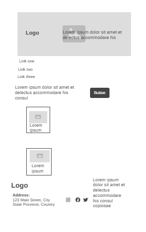
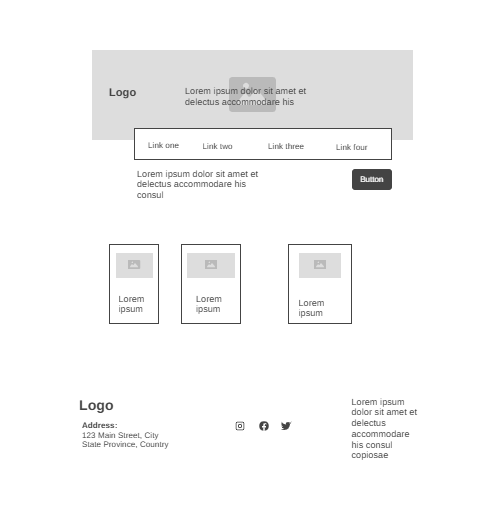

Site Name
Name: Mutare Eco-Tourism
Reason: The name reflects the primary focus of the website, which is to promote eco-tourism in Mutare, Zimbabwe. It directly communicates the content and purpose of the site.
Site Purpose
The website aims to provide a hub for eco-tourism enthusiasts, offering information about Mutare’s natural attractions, real-time weather updates, biodiversity insights, and travel guidance. The site also promotes sustainable travel and supports local tourism initiatives.
Scenarios
- What are the top eco-tourism attractions in Mutare?
- How can I check the weather forecast before visiting Mutare's national parks?
Color Schema
Primary colors selected for the website are:
#004d40 (Dark Green): Used for headings, buttons, and key accents.#f5f5dc (Beige): Used for background and secondary sections.
Typography
- Heading Font: Lora (serif) - Used for headings and titles.
- Body Font: Montserrat (sans-serif) - Used for body text and navigation menus.
Wireframe
Mobile View
Desktop View
Testing
To ensure the website plan is accessible and follows best practices, the following validations and tests will be conducted:
- HTML and CSS validation using W3C Validators.
- Accessibility checks for color contrast and keyboard navigation.
- SEO evaluation using Lighthouse reports.
- Cross-browser and device testing.